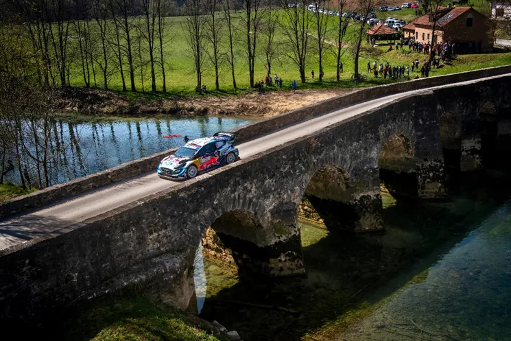
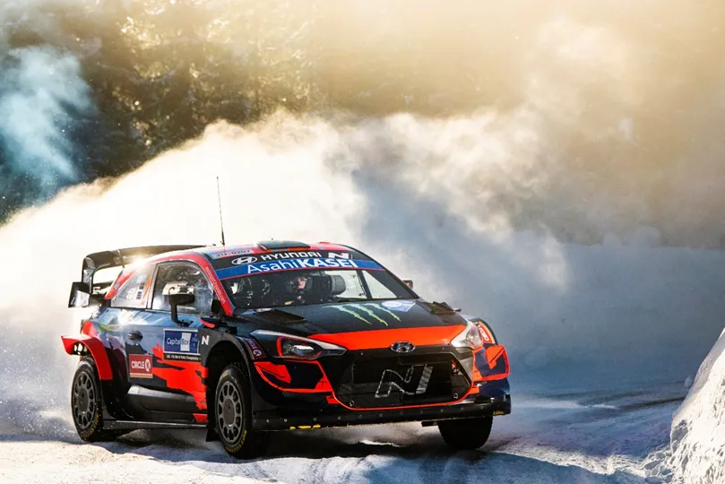
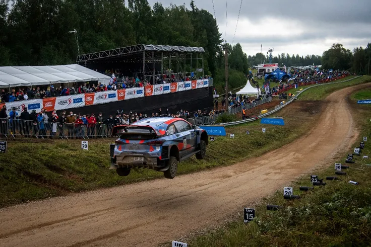
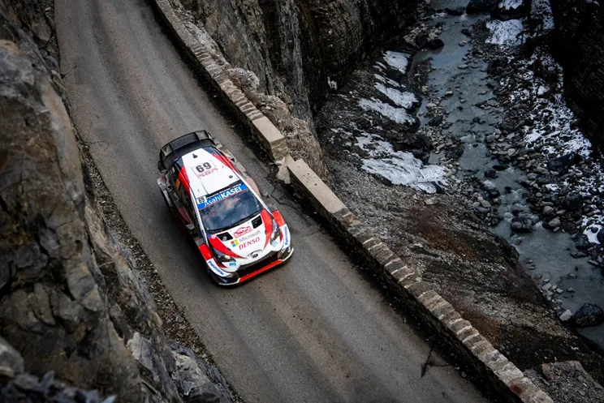
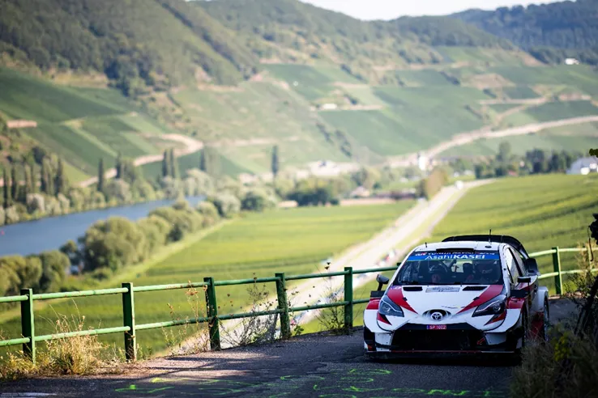

The last 5 debuts from WRC drivers
Gregoire Munster is making his Rally1 debut this week in Chile. The Luxembourger driver will drive a Ford Puma Rally1, previously used by the now retired Jourdan Serderidis, for the first time and he is also expected to drive the upcoming Central European Rally as well. Munster won Rally Japan in WRC2 last year, and also won Rally Estonia in JWRC this year (why he did that rally in a Rally3, I still don’t know). Expectations are fairly low, as the M-Sport driver isn’t getting his debut based on his pace, but because of his relationship with Serderidis, who owns the car. But how did the last (non-gentlemen or one offs) 5 drivers on their WRC debuts? Well, let’s take a dive on the past few years and take a look, shall we?
Adrien Fourmaux – Rally Croatia 2021

Adrien Fourmaux’s
debut was very impressive. The Frenchman was signed in for the main M-Sport
squad in 2021, in a shared 2nd seat with Teemu Suninen (which would
later be a full seat after Estonia 2021). His debut came in Croatia. Fourmaux
was on the pace immediately, and was faster than teammate Gus Greensmith,
ending the rally in 5th. The M-Sport driver had plenty of top 5
times across the rally, with 2nd places in the 2 passes of Mali
Lipovec being the highlight of his rally. His only mishap was when he went off the road on Sunday and lost a
minute, but apart from that he was very impressive, and fast. A crash filled
2022 would follow, that hampered Fourmaux’s progress, and was a reason why he
was demoted back to WRC2 for 2023. But the Frenchman has impressed in 2023, and
a return to Rally1 machinery is a real possibility.
Oliver Solberg – Arctic Rally Finland 2021

When Oliver Solberg was signed up by Hyundai for their junior driver programme, the rally world was very excited, and for good reason. The young swede had become the youngest ever ERC winner by winning Rally Liepaja in 2019, and also had impressive performances in the WRC3 and in the ERC in 2020. And he also carried the Solberg last name, a name of a world champion. The first chance we got to see Solberg in a premiere class car, was in Arctic Rally Finland in 2021. And in all honesty, this was probably his best rally in the premiere class to date. Solberg impressed, getting a top 5 stage time in 6 out of the 10 stages of the rally on his debut no less. The swede was battling Sebastien Ogier for 6th before the Frenchman crashed on the last stage of Day 2. If it wasn’t for a spin on the power stage, he would have finished 6th, but in the end, he finished 7th, a few seconds behind Katsuta. It was a very promising debut, but unfortunately, a disastrous 2022 season would follow, which would lead to his dismissal from Hyundai.
Pierre Louis Loubet – Rally Estonia 2020

Pierre Louis Loubet’s debut in WRC machinery should have come earlier than Estonia in 2020, but covid delayed his plans. The Frenchman won WRC2 in 2019, and was rewarded with a part time programme in 2020 sponsored by FFSA and 2C Competition. It was rumoured that he would be driving a C3 WRC, but instead he got an old spec i20 WRC. His debut in Estonia was honestly nothing special. The Frenchman was just trying to make it to the finish, and was slow compared to the other WRC cars, but still ahead of Gus Greensmith in the 3rd Fiesta. Unfortunately for Loubet his rally would end on Stage 13 when his steering failed. In a way this rather set the stage for Loubet’s 2021 season, where the 2C Competition driver finished in the top 10 only once, due to a mix of crashes and mechanical failures. He seemed to have put that aside in 2022, when he joined M-Sport, but these gremlins have returned in 2023, and could cost the young Frenchman’s seat for 2024.
Kalle Rovanpera – Rally Monte Carlo 2020

Kalle Rovanpera made his eagerly anticipated debut in the WRC with a Toyota Yaris WRC in Rally Monte Carlo in 2020. The Finn was signed up by Toyota for a full-time seat after he won the 2019 WRC2-Pro title in a Skoda Fabia R5. Won is a bit of an understatement, dominated would be a better word. In Monte, Kalle did everything you can ask off your young driver. A clean and measured drive without any major mistakes meant that Kalle would end his first rally in 5th place. He was 4 minutes off eventual winner Thierry Neuville, but the top 3 of Neuville, Ogier and Evans were in a league of their own on that rally, fighting for the win from Thursday to Sunday. Kalle would continue to develop throughout 2020, and 2021, and he would really start becoming a big threat from the 2nd half of 2021 onwards. He would eventually dominate in 2022 and win his first world championship, a feat that he is set to repeat in 2023.
Takamoto Katsuta – Rally Germany 2019

Rally Germany 2019
was the stuff of dreams for Toyota. The Japanese manufacturer scored a 1-2-3 result,
with Ott Tanak winning the rally, and teammates Jari Matti Latvala and Kris
Meeke joining him on the podium. But away from the spotlight, in the last of the
point paying positions, there was a 4th Yaris, that of Takamoto
Katsuta, who was making his debut in a WRC car. The Japanese driver had also
driven a Yaris in some rounds of the Finnish championship winning both of them (albeit
not with the gap that you’d expect). Katsuta was also driving a Fiesta R5 in
WRC2 since 2017, where he had impressed Toyota by winning Sweden in 2018 and
Chile in 2019, as well as getting multiple podiums. Lets not kid ourselves, the
major reason why he got his chance at a WRC car was because of his nationality,
as Toyota wanted a Japanese driver in a Japanese car, not unlike Subaru’s affair with Toshi Arai in the 2000s. Katsuta would finish 10th in Germany,
way off the pace, especially on the first day, but he had a clean rally which
was his objective anyways. Katsuta would keep driving for Toyota in 2020, 2021
and 2022 in a 4th car with highlights being his podiums in Safari
and Japan, steadily progressing towards being a respectable WRC driver. He was
rewarded with the 3rd car on rallies Ogier isn’t doing in 2023, with
mixed results, but his Finland podium shut a lot of mouths, including mine.
All pics are from the Red Bull Content Pool


Comments